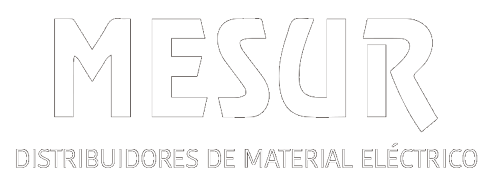
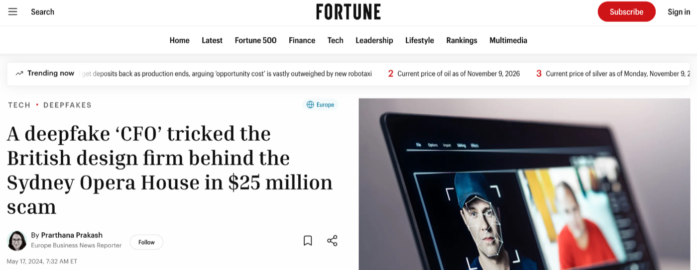
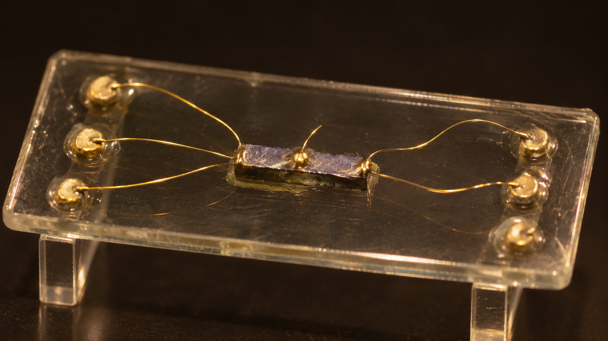
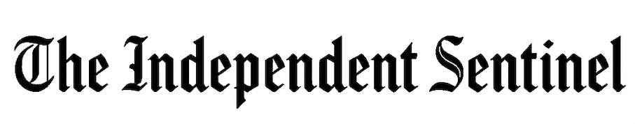

Espacio para reproducir o pausar · → para continuar
El vídeo no se ha podido cargar. Ábrelo desde la carpeta de vídeos.
Espacio para reproducir o pausar · → para continuar
El vídeo no se ha podido cargar. Ábrelo desde la carpeta de vídeos.

Saber qué estás decidiendo.
Elegir lo que conviene.
Dar la cara si sale mal.
Ganársela. Mantenerla.




Mantente al día

Cada semana: los avances en IA y ciencia de datos, y las historias que conectan la tecnología con la cultura. Por Javier Fuentes.